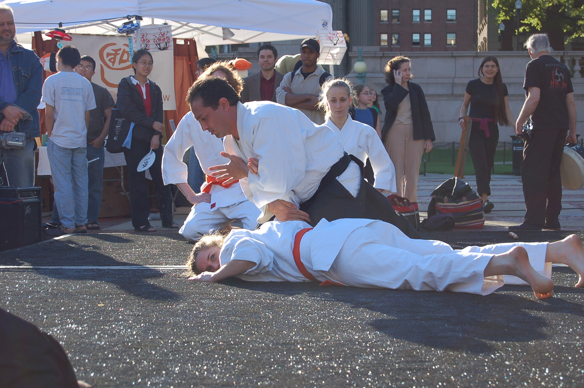
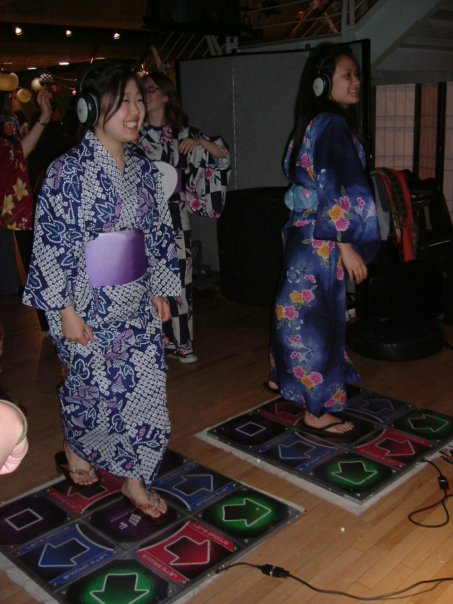

-
J-CULTURE CORNER
Experience several of Japan's traditional and modern cultures through the booths and shows of our participating Japanese organizations.
-
iTASHO
iTASHO is a store that specializes in selling erasers! Japanese are very particlar about their stationary and iTASHO shows the extent of Japanese perfectionism and artisanship. They will be holding a store at MATSURI 2008, so don't miss them!
Visit their site here!

-
CU Kendo Club
Kendo Club will be holding periodic demonstrations. See them do formations and actually battle each other.

-
CU Karate Club
Karate Club will also be holding periodic demonstrations. Perhaps your stereotype of this martial art will change...
-
CU Aikido Club
Aikido Club is another martial arts club that will be participating, holding periodic demonstrations.
 -
CU Anime Club
Anime Club will be here to talk about and expose the public to Japanese animation culture.
-
Teachers College Friends of Japan (FoJ) presents ORIGAMI
Friends of Japan will be holding a booth introducing ORIGAMI!
-
CU DDR Club

-